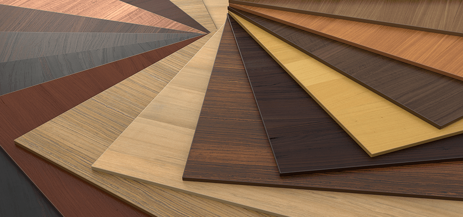
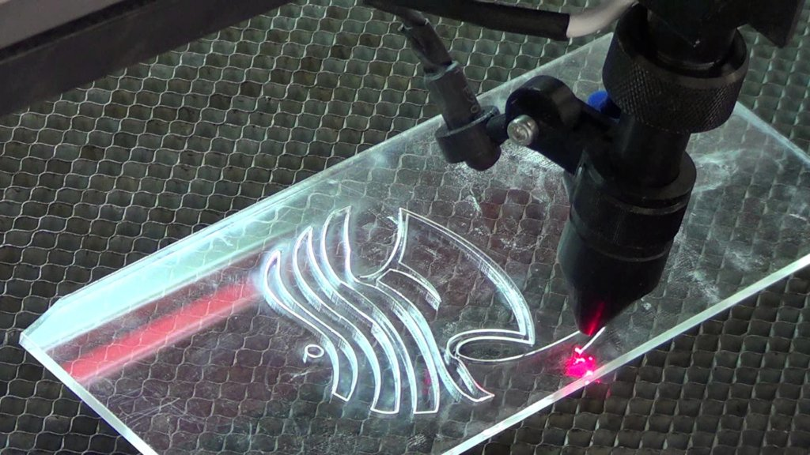
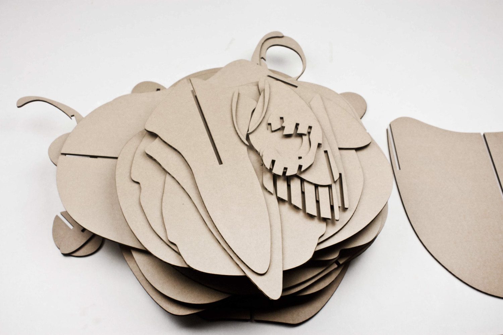
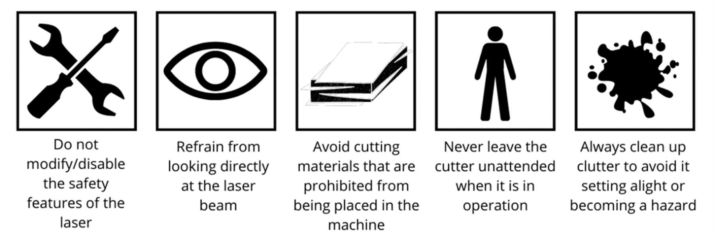

Laser cutting is a manufacturing technique that utilizes a focused beam of light, typically from a carbon dioxide (CO2) or fiber laser, to melt, vaporize, or ablate (remove) material. This high-precision process allows for intricate and detailed cuts with minimal heat-affected zone and minimal waste.
Laser cutting finds applications in various industries, including:
The versatility of laser cutting lies in its compatibility with a wide range of materials. Some of the most commonly used materials include:
Wood: Plywood, MDF, balsa, hardwoods, and softwoods are popular choices for laser cutting, allowing for creation of furniture, toys, decorative items, and more.  Source
Acrylic: This versatile plastic offers excellent optical clarity and comes in various colors and thicknesses, making it ideal for signage, displays, and craft projects.  Source
Metals: Thin sheets of steel, stainless steel, aluminum, brass, and copper can be laser-cut for various applications, such as jewelry, electronics, and architectural components. Source
Paper and cardboard: Laser cutting paper and cardboard creates intricate invitations, greeting cards, packaging designs, and more.  Source
Beyond these common materials, laser cutting can also be used with:
Rubber: For gaskets, seals, and other industrial applications.
Factors to Consider when Choosing a Material:
Compatibility with your laser cutter: Different laser types (CO2, fiber, etc.) have varying capabilities.
Desired outcome: Melting, vaporizing, or ablation will determine the final cut quality and surface finish.
Thickness of the material: Laser cutters have limitations on material thickness.
Post-processing requirements: Some materials may require sanding, polishing, or other finishing steps.
Laser cutting safety is paramount due to the potential hazards associated with intense laser beams. Most lasers, especially those operating in the visible and near-infrared regions, pose a risk of eye damage, particularly to the retina, and can also harm the skin. Laser classes, ranging from Class 1 to Class 4, categorize the safety level of lasers, with Class 1 being safe under normal working conditions and Class 4 lasers capable of generating hazardous diffusely reflected beams. Only trained individuals are permitted to operate laser cutting machines, and strict safety measures, such as enclosure closure before machine operation, are implemented. The machine is typically classified as Class 1 during standard operation, ensuring that exposure to dangerous laser radiation is prevented. The cutting chamber is fully enclosed, and access requires keys for all body panels. In adherence to safety rules, laser operators are required to wear standard personal protective equipment, including a laboratory coat, safety glasses, and a dust mask. These precautions collectively ensure the safe use of laser cutting technology in various applications.
 Source